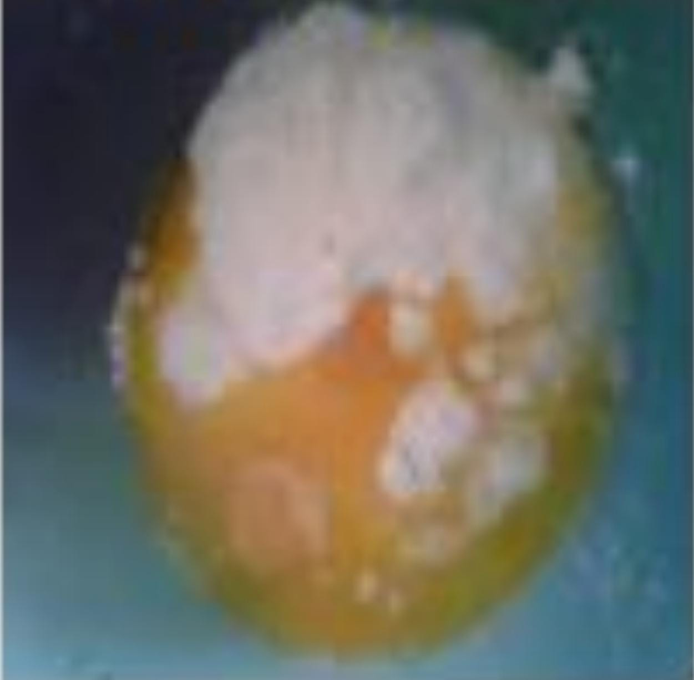
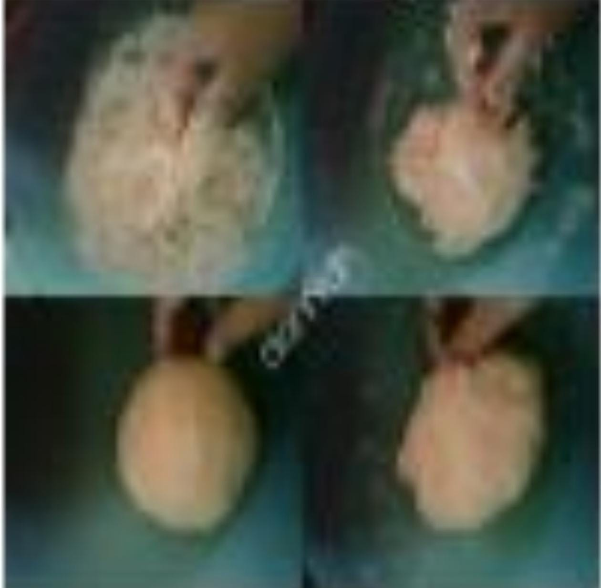
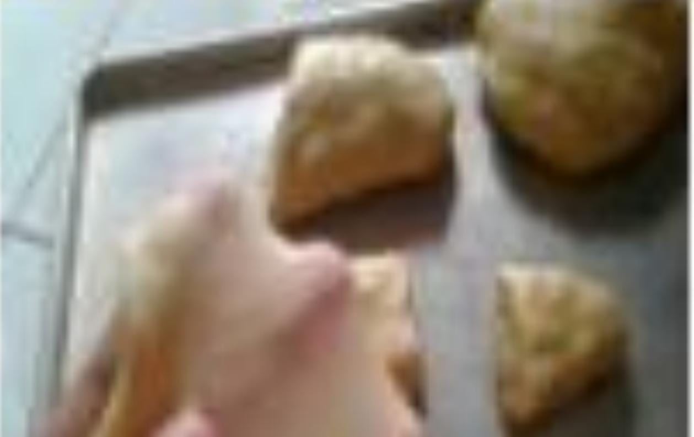

resep kue maryam
bahan bahan:
- 250 gr tepung terigu
- 1 butir telur
- 3 sdm margarin, lelehkan
- 100 ml air hangat
- 1/2 sdt garam
- margarin leleh untuk olesan
- minyak untuk merendam
- campur semua bahan roti jadi satu

- uleni sampai kelis (aku pakai tangan) jangan jika adonan lengket ya, lumuri tangan sesekali dg tepung (tapi jangan menambahkan tepung) uleni terus sampai asonan kelis

- kalisnya adonan canai tidak sekalis adonan roti ya,kira2 seperti ini sudah cukup
